Planning · Design · Production
The art of gathering
Weddings, quinceañeras and private celebrations composed with light, flowers and architecture, from Tijuana, Baja California.
01 The studio
A memorable celebration isn’t decorated — it is composed. Light, material, scale and rhythm, considered for the people who will live it.
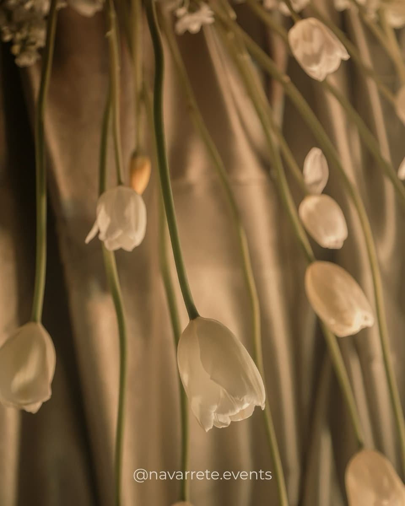
Navarrete Events is an event planning and design studio based in Tijuana. We stay with every project from the first conversation to the last guest: the concept, the floor plan, the suppliers, the build and the night itself.
We want every celebration to resemble the people it belongs to. That is why we don’t work from templates — we work from questions.
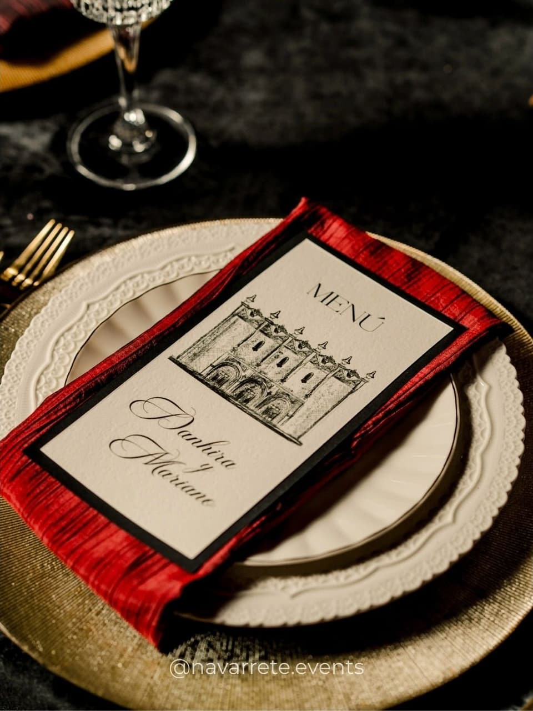
02 Celebrations
Signature celebrations
A selection of recent projects. Each began with a different conversation and ended with a language of its own.


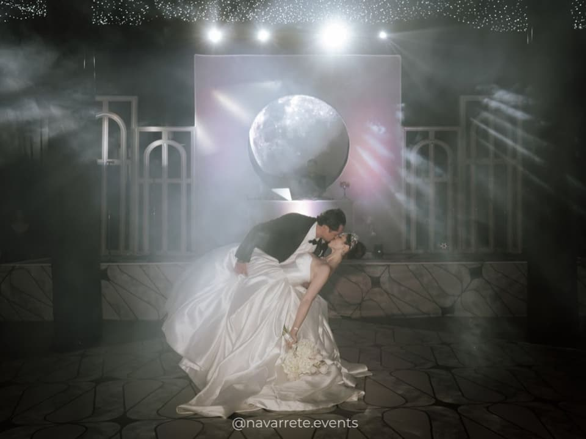
03 The experience
An evening is a sequence of moments.
The arrival, the first look at the room, the light shifting through dinner, the first dance through the haze. We design the whole sequence, not just the setting.
-
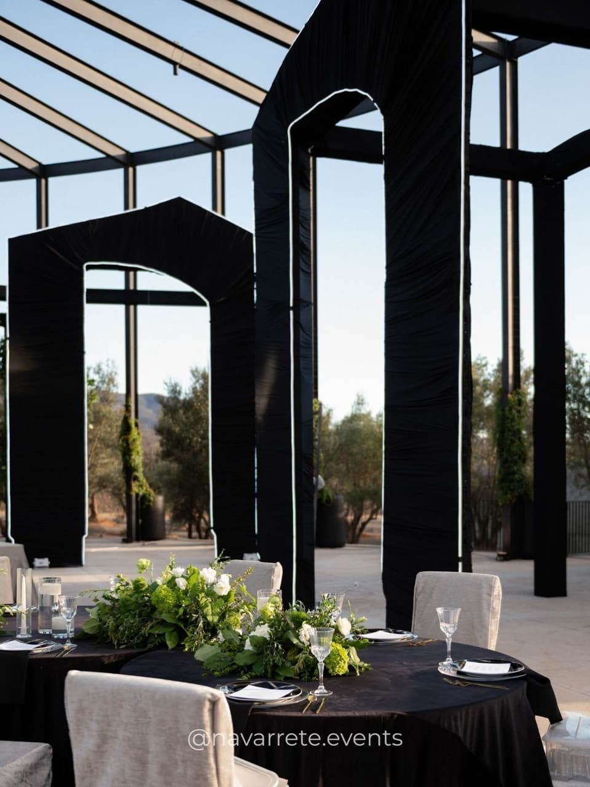
I
The arrival
The first frame sets the tone for the entire evening.
-
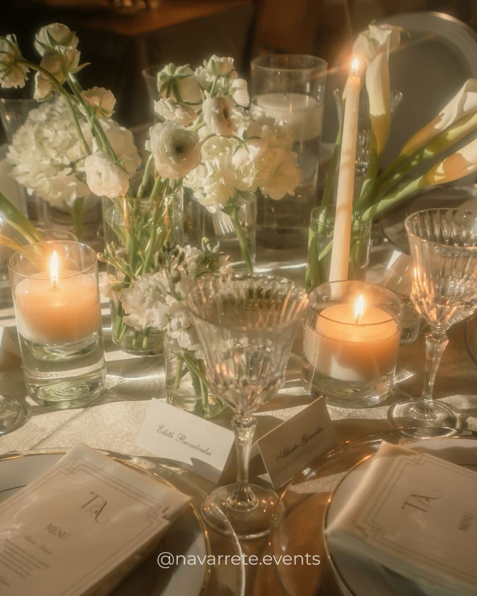
II
The table
Where guests spend the most time, and where care shows the most.
-
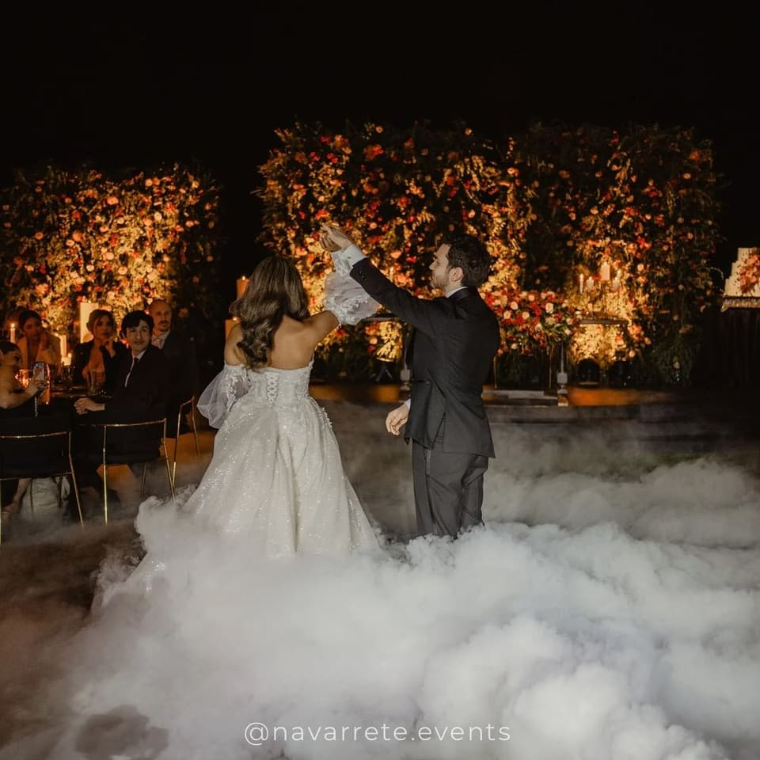
III
The dance floor
Light, music and haze: the moment design becomes memory.
04 Services
What we do
Every project draws on these disciplines in the measure it needs.
Weddings · Quinceañeras · Graduations · Private celebrations
- 01
Full planning
Budget, timeline, suppliers and logistics, coordinated from the first conversation to the close of the event.
- 02
Design & creative direction
Concept, palette, materials, lighting and floor plan: a complete visual language, conceived for the place and for you.
- 03
Floral & installations
Centrepieces, arches, floral ceilings and sculptural installations that turn flowers into architecture.
- 04
Production & coordination
Build, set design, lighting and on-the-day coordination, so that all you have to do is be present.

05 Philosophy
“True luxury lives in what goes unnoticed: the candle that was already lit, the chair no one had to move.”
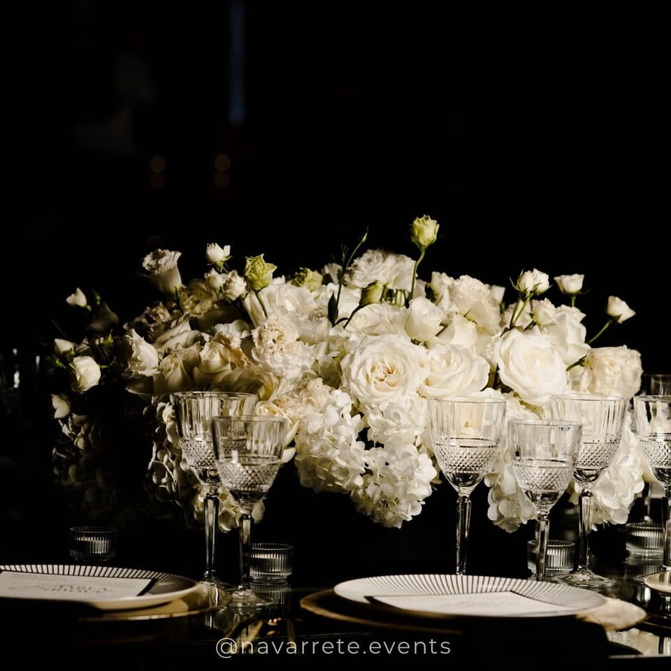
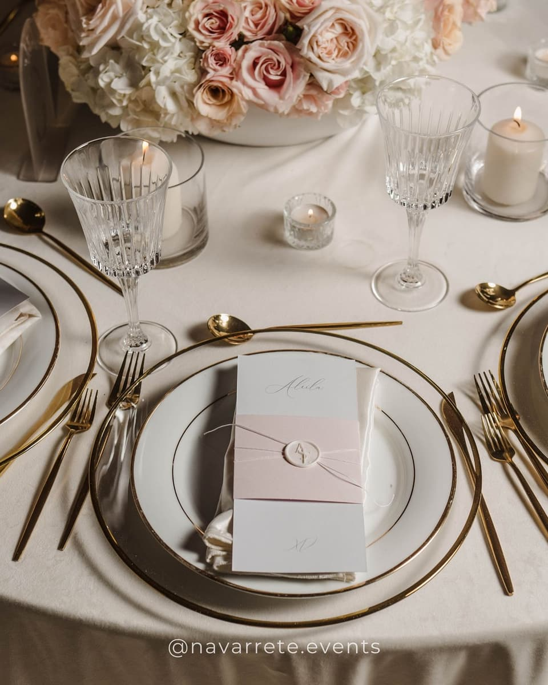
We give the grand gesture and the smallest detail the same attention, because guests remember both — even if only one of them makes it into the photographs.
06 Journal
Notes on design and celebration

From floor plan to celebration
What happens between the blank canvas and the night itself — layout, build and order.
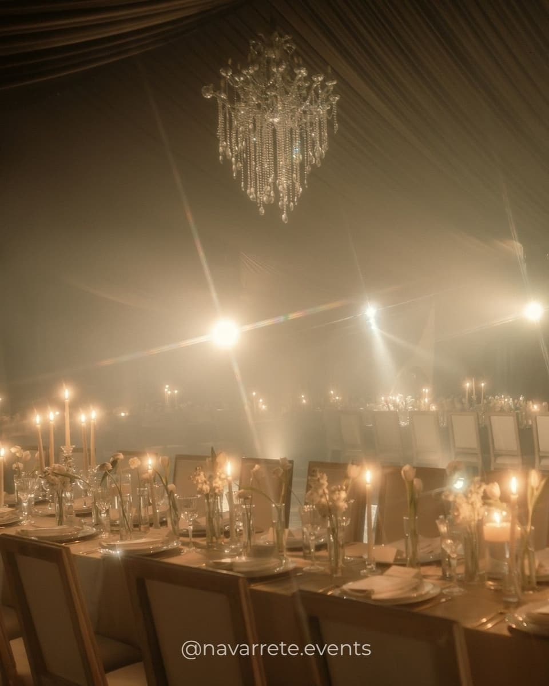
Light as a material
Before flowers or linens, light decides how a room feels. Notes on candles, chandeliers and shadow.
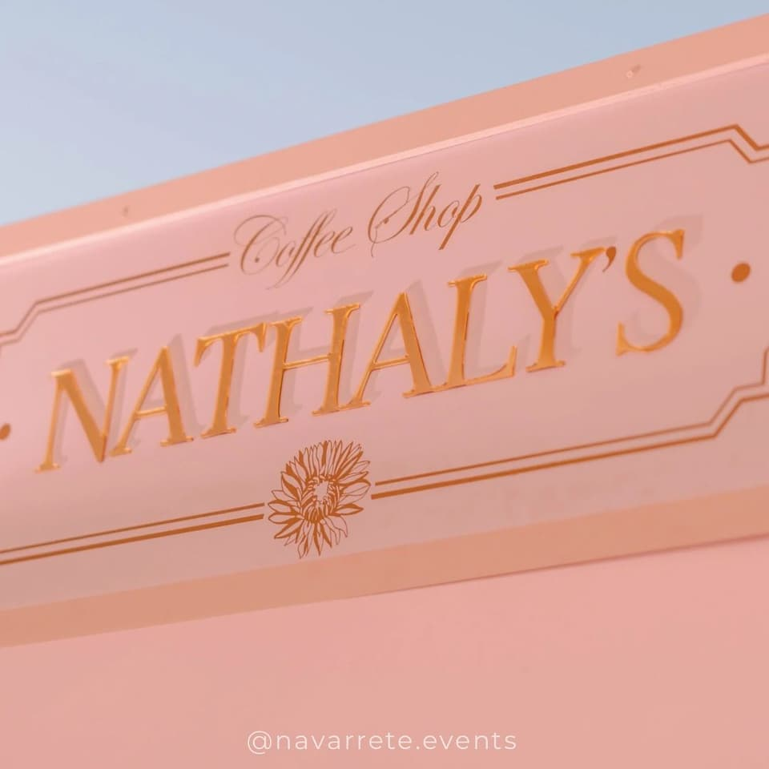
Quinceañeras with a point of view
A coffee shop, a racetrack, a city in neon. When the concept begins with the person being celebrated.
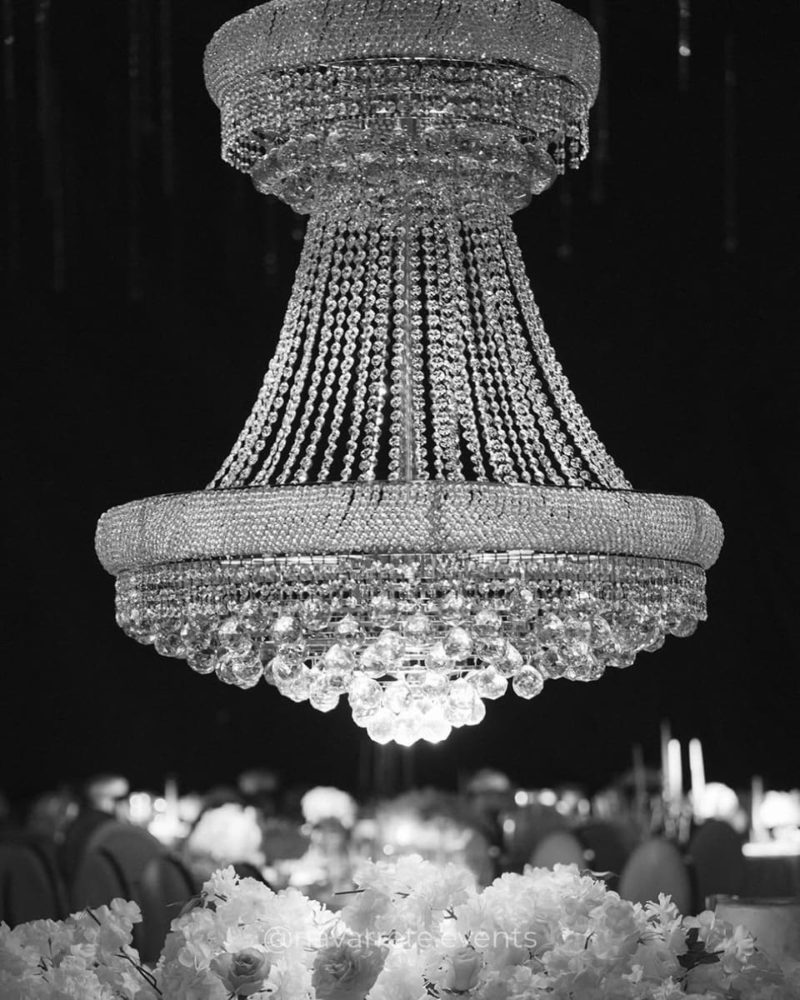
07 Start a project
Tell us what you imagine.
Even if the date isn’t set or the idea is only beginning to take shape, the first conversation is the best place to start.